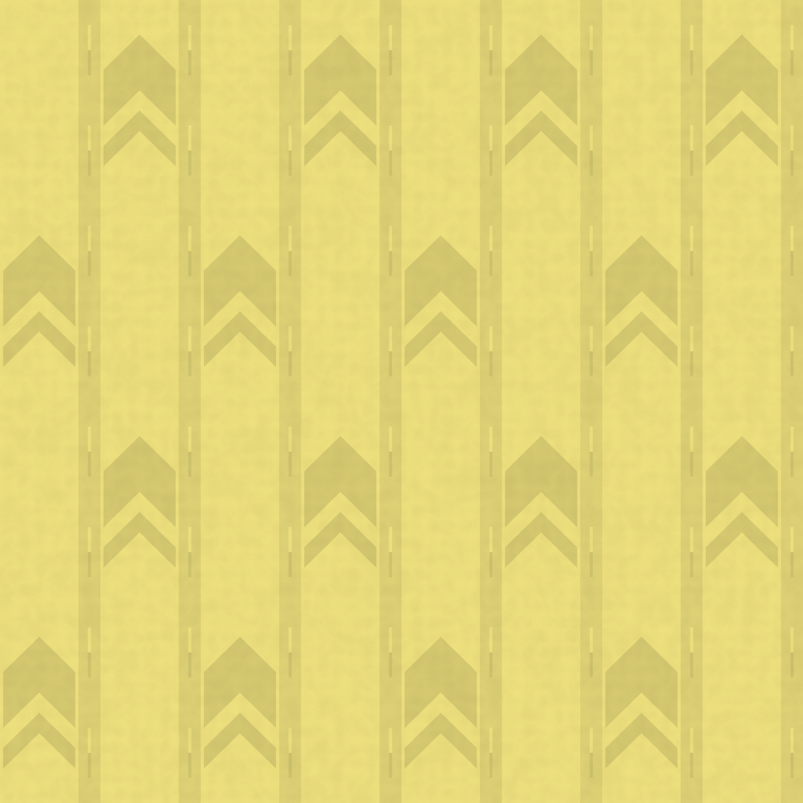
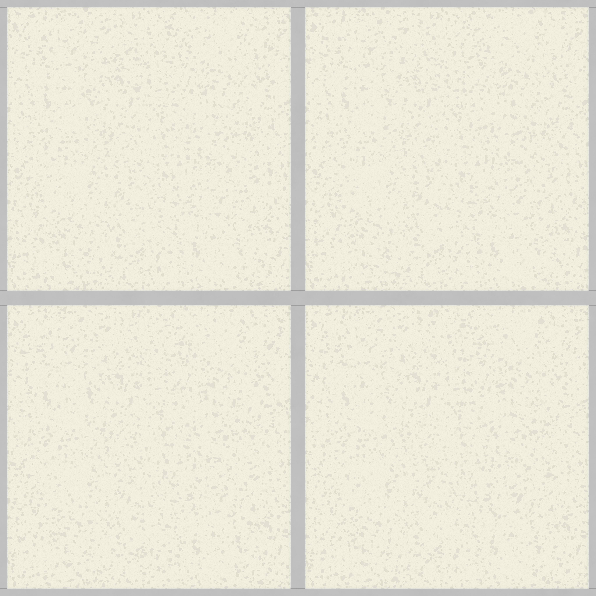
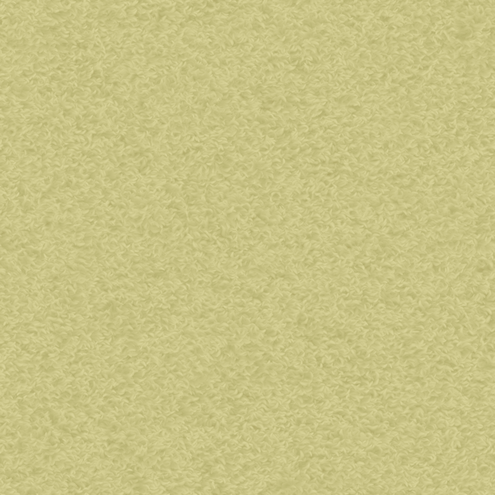

AN EXPERIMENT IN SPATIAL UNCERTAINTY
VR: BALANCE OS BRAÇOS PARA ANDAR // PINÇA NA TESTA LIGA O VISOR
PALMAS NA PAREDE = PHASE SHIFT // MÃOS NOS OLHOS = SE PROTEGER
PINÇA PARA PEGAR O QPS // LEVE A ALMOND WATER À BOCA


